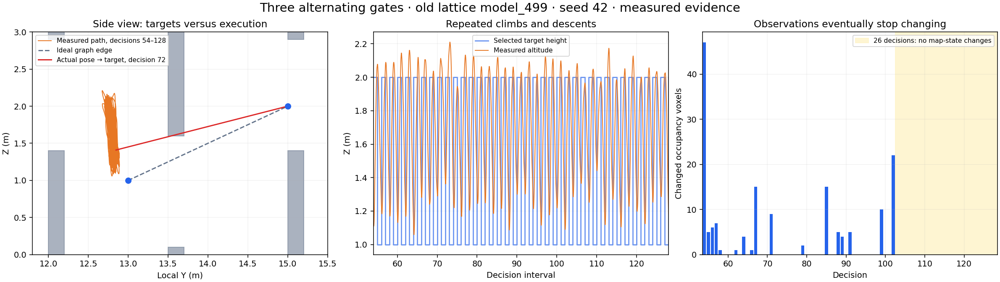

Advanced height-channel experiments
Five measured rollouts · Original room layouts and spawn points · September lattice model_499 · 29 October 2026
No retrainingNo manual waypoint guidanceUp to 128 decisions per run
What these tests exposed
- A persistent vertical cycle. With three alternating gates, the vehicle crosses only the first gate. Decisions 54–128 alternate between two target heights, traveling 69.1 m with only 0.19 m net horizontal displacement. During decisions 103–128, occupancy maps do not change at all, but utility remains positive.
- Point-clear graph edges can be hard to execute. The retained ideal node-to-node edge is clear for a point, while four selected straight connections from the actual vehicle pose intersect the low lintel. The measured vehicle stays before that gate; this is evidence of a planning/clearance/execution mismatch, not a recorded collision.
- The two-height lattice misses an intermediate-height tunnel. The tunnel has an opening at Z 1–2 m. The old reference graph samples Z 1 and 2, on the solid boundaries, and has no route. Adding Z 1.5 restores geometric connectivity in a CPU reference test. The actual old-policy run stops after 51 decisions without crossing.
- Passing gates and finishing exploration are different. The reversed-order run crosses both gates but does not approach the representative far-region point within 1.2 m. Planner completion alone does not certify full coverage.
Replay the measured flights

Download this GIF · Download local geometry JSON
Show original and modified floor plans

Orange: measured flight path. Blue: observed geometry. Gray: full-layout context. The physical roof is hidden only in the 3D view. Decision means one policy waypoint selection followed by one simulated second of controller execution.
Measured outcomes
Height switches exceed 0.4 m in selected target height. “No map change” compares raw occupancy states before and after the action, including changes to previously known voxels. It does not prove an action has no future value. Far-point visitation uses a 1.2 m XY radius. All five runs recorded zero rotor-contact ticks; those sensors do not certify collision-free flight. These are individual diagnostic runs, not success-rate estimates.
Why the repeated climbs are concerning

Both repeated target positions are outside obstacles. But their clearance alone does not validate the connection from the current vehicle pose. At decisions 72, 80, 106 and 110, that straight connection enters the low lintel in exact reference geometry. Across the full run, 44 selected connections have sampled clearance below 0.4 m. The actual controller may take a curved path, and no collision is inferred from this check.
In the final 26 decisions, utility stays at 452 with four valid actions while the occupancy map stays identical. The vehicle continues climbing and descending with only 0.037 m net XY displacement. Limited visibility may contribute earlier, but it does not explain away this measured late cycle. The existing 3D displacement stall flag misses it because vertical travel still counts as motion.
Detailed cycle analysis
Separate geometric feasibility from lattice feasibility
All layouts retain the original walls and spawn. Alternating gates require changes of height; the thick mid-height tunnel is explicitly a representation stress test. Continuous geometry checks find routes with a 0.4 m box margin. The table below instead tests a full-knowledge reference graph with 1 m XY spacing, Z levels 1 and 2 m, and connection radius 2.99 m.
The expanded reference is a conservative box-clearance model, not an exact vehicle or controller model. Closely spaced gates were crossed in the measured rollout despite no path in that conservative reference; online pose nodes and continuous execution differ from its static assumptions.
Bounded representation probes: changing only reference XY spacing to 0.5 m restores expanded-reference paths for both the triple and close-pair cases, retaining Z 1 and 2. Adding Z 1.5 restores a path through the mid-height tunnel. These CPU witness paths support testing denser local sampling; no actual planner setting was changed and improved flight performance remains untested.
Reference method and witness paths · Reference graph data
Why stopping does not certify coverage
The mid-height run stops when its last retained utility drops from 8 to 0, with empty guideposts and no global path. Yet 210 raw global frontiers remain. Visibility tests and the minimum-utility threshold separate raw frontiers from actionable graph utility; the saved data do not isolate the cause of the final utility loss.
The reversed-order run passes both gates and observes free space near its representative point, but its closest XY approach is 1.95 m, outside the 1.2 m visitation radius. This flag alone does not establish unreachable space or incomplete mapping.
Terminal-state evidence and metric definitions
The earlier native crash remains unresolved
The previous map-24 seed-43 run crashed during its first post-motion frontier update. This instrumented recheck completes in 81 decisions and passes both gates. Replaying its 83 captured planner inputs through the real CPU planner also succeeds. Because the original failed inputs were not saved, the recheck does not identify or fix the original native failure.
What to test next
- Check candidate edges from the actual pose with controller-compatible clearance, and log predicted controller trajectories and costs at the cycle.
- Add a horizontal-progress / repeated-action diagnostic so vertical motion cannot hide a persistent loop.
- Test local XY refinement and intermediate Z samples separately, then compare the same fixed seeds and maps before considering retraining.
These are proposed follow-up experiments. The published runs keep the old learned policy, planner parameters and controller unchanged; only map geometry and diagnostic recording differ.
Download all five GIFs, maps and analysis · Full measured diagnostics · Earlier three-layout comparison · 32-map baseline gallery